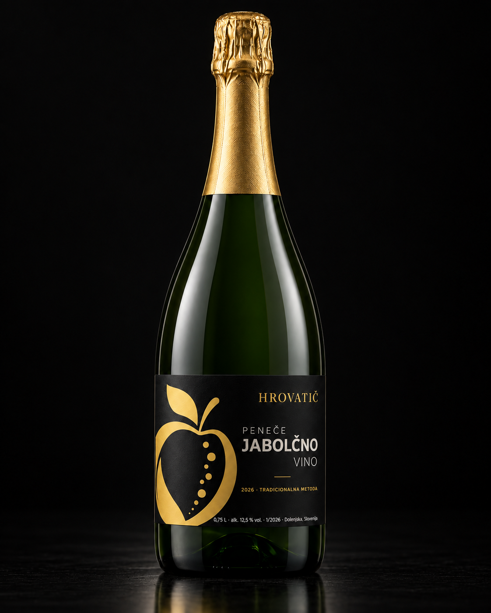

01
Peneče jabolčno vino
Pridelano iz skrbno izbranih jabolk po tradicionalni klasični metodi. Odlikujejo ga svežina, prijetna sadnost in uravnotežen značaj, v katerem ostaja v ospredju naravna aroma jabolka. Nežni mehurčki poudarijo njegovo lahkotnost in eleganten značaj ter ustvarijo prijetno, harmonično celoto. Peneče jabolčno vino priporočamo postreči dobro ohlajeno, pri temperaturi med 7 in 12 °C, saj tako najbolje pridejo do izraza njegova svežina, sadna aroma in nežna jabolčna cvetica.
ALKOHOL
7,9 % vol.
LETNIK
2025
STIL
Polsuho
METODA
Klasična
SERVIRANJE
7–12 °C
VOLUMEN
0,75 L
